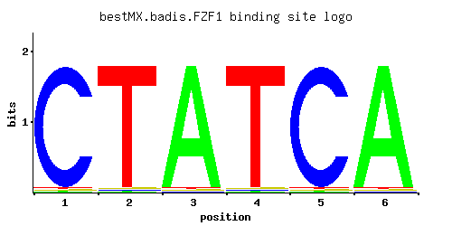

FZF1
YGL254W, SUL1, RSU1, NRC299
Transcription factor involved in sulfite metabolism, sole identified regulatory target is SSU1, overexpression suppresses sulfite-sensitivity of many unrelated mutants due to hyperactivation of SSU1, contains five zinc fingers
Best-performing DNA-binding model.

View and copy the recommended matrices ↘
A | 0.01 0.01 0.97 0.01 0.01 0.97 C | 0.97 0.01 0.01 0.01 0.97 0.01 G | 0.01 0.01 0.01 0.01 0.01 0.01 T | 0.01 0.97 0.01 0.97 0.01 0.01
A | 1 1 97 1 1 97 C | 97 1 1 1 97 1 G | 1 1 1 1 1 1 T | 1 97 1 97 1 1
A | -3.47 -3.47 1.11 -3.47 -3.47 1.11 C | 1.68 -2.89 -2.89 -2.89 1.68 -2.89 G | -2.89 -2.89 -2.89 -2.89 -2.89 -2.89 T | -3.47 1.11 -3.47 1.11 -3.47 -3.47
Alternative candidate matrices 1
Historical matrix candidates from the original ScerTF database. Expand a source to inspect its original logo, scores, and matrix values.
FZF1Foat et. al.P = 1View matrix ↘
Gene-level annotations and interactions.
Genes bound in ChIP-chip experiments 97 genes
YAL017W, YAL018C, YAL022C, YBL001C, YBR012C, YBR013C, YBR040W, YBR154C, YBR155W, YBR160W, YBR178W, YBR188C, YBR189W, YCL039W, YCL041C, YCL043C, YDL045W-A, YDL089W, YDL090C, YDL104C, YDL108W, YDL109C, YDL202W, YDL203C, YDL206W, YDR042C, YDR064W, YDR098C, YDR179C, YDR179W-A, YDR245W, YDR318W, YDR319C, YDR468C, YDR469W, YDR484W, YDR526C, YEL001C, YEL030W, YER049W, YER083C, YFR017C, YGL202W, YGR089W, YGR128C, YGR129W, YGR156W, YGR218W, YHR085W, YHR089C, YHR138C, YIL147C, YIR023W, YJL148W, YJR011C, YJR044C, YJR100C, YLR061W, YLR076C, YLR077W, YLR105C, YLR229C, YLR277C, YLR367W, YLR368W, YLR409C, YLR410W, YMR125W, YMR131C, YMR218C, YMR219W, YMR227C, YMR228W, YMR238W, YMR257C, YMR270C, YNL146W, YNR018W, YOR004W, YOR070C, YOR109W, YOR110W, YOR138C, YOR140W, YOR141C, YOR142W, YOR273C, YOR274W, YPL018W, YPL019C, YPL034W, YPL123C, YPL179W, YPL216W, YPL217C, YPL251W, YPL253C
Genes affected by TF deletion 29 genes
YIL082W-A, YHR146W, YMR220W, YBR093C, YBR129C, YER029C, YOR229W, YOR073W, YOR075W, YGL212W, YNL090W, YOR074C, YMR145C, YPL092W, YPL156C, YMR144W, YNL154C, YOL149W, YNL065W, YOL029C, YNL289W, YGL254W, YLR297W, YOR029W, YMR034C, YBR244W, YLR049C, YDR122W, YOL101C
Predicted TF–TF partners 1 genes
SPT23